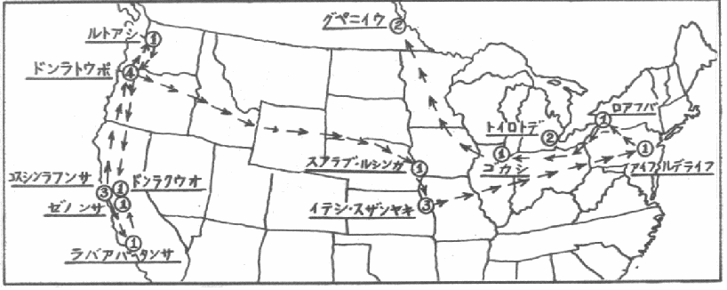

一九二六年二月十四日に、
これは、亜米利加の都市の
クララ・ニュウマンの絞殺死体が、姪によって同家屋根裏の便所で発見されたのは、貸間ありの札を出してから六日目の、二月二十日の夕方だった。同女は、手をもって頚部を扼殺され、便器の水中に顔を突っ込んで死んでいて、しかも明白に暴行を受けていた。この、六十三歳の老婆を暴行致死せしめた事実から観て、検視に立会った係官一同は、犯人は変態性慾者に相違ないという当然の意見に一致したのだった。
時を移さず其の筋の活動は開始されたが、物的証拠と目すべき何等の遺留品なく、この捜査は実に困難を極めた。同家は、被害者と姪と女中の、男気のない三人暮らしで、犯行の推定時間には、女中は買物に出て留守だったし、姪は、伯母のクララが、貸間の下検分に来た男を案内して、愛想よく階上へあがるところを、廊下の端の台所の戸口からちらと瞥見しただけで、遠くもあり、ほんの瞬間の観察に過ぎなかったので、その人相着衣等に関する記憶は、殆んど皆無と言ってもいいほど、漠然として薄弱なものだった。他に、信拠するに足る手懸りは一つもなかった。
すると、それから丁度十日経った三月二日に、
亜米利加の新聞王ハアストの言葉に、新聞雑誌其の他の刊行物に市場価値を持たせようとすれば、それは「
三月余りは何事もなかった。が、六月十日である。又もや桑港で同じ犯罪が繰り返された。Mrs. Lillian St. Mary という、不思議なことには、三度び六十三歳になる老婆が、自宅の窓へ例の「
この時は、被害者の他に犯人を見た者がないので、一層厄介な状況だった。全市の刑事と社会部記者が、競争的に捜査に従事したが、それは、まるで空気を追い廻すような、眼当てのない仕事だったと言わなければならない。犯人は変態性慾者――恐らくは常人に気の付かない程度の精神異常者――であろうと言うに止まり、捜査に参加した人々は、相互の影を踏んで鉢合わせを演ずるばかりで、全く暗中摸索の状態だった。ここに一言しなければならないことは、この事件に関して米国各市の警察が受けた苛酷な非難に就いてである。あの二月二十日のクララ・ニュウマン殺しを皮切りに、「彼」は、後説するように亜米利加中の都会を荒し廻って
間もなく「彼」は
既に同一人によって為された五個の殺人がある。しかも、全部を通じて犯人らしい者を認めたのは二回だけで、それも、実におぼろげな証言しか呈し得ない。他に、何一つ手懸りがないのだから、警察は困惑すると同時に躍起となり、全加州民、殊に、部屋貸しをしている女ばかりの家などは、何処の町でも戦々兢々として「
が、これで「彼」も当分満足したらしく、その後二個月程は平穏だった。すると、この自制に耐え切れず、突如一時に飽満しないではいられないかのように、俄然「彼」は、三日間に三つの殺人事件として、潜んでいた姿を現した――十月十九、二十、二十一日、場処は、オレゴン州ポウトランド市である。
以前は、風のように犯罪地を変えたのだから、各市の警察も手の下しようがなかったということが、或る程度まで
十月十九日の事件は、こうである。Mrs. Beata Withers という、最近離婚した許りの、三十五になる美しい女があった。家を売る心算で、おもての窓に「
警察の無智に関係なく、事実は事実を重ねて行った。前述のウイザアス夫人の家から一足のところに、ヴアジニア・グラント夫人―― Mrs. Virginia Grant ――という五十九歳の老女がやはり貸間の札を出して住んでいたが、それが翌二十日の第二の被害者である。グラント夫人は、その空部屋の壁の切込煖炉から、同じく暴行絞殺屍体となって現れた。些少の安価な宝石類と毛皮の外套が盗まれていた。より驚くべきことは、これをも警察は、グラント夫人は心臓の故障による自然死であると、悠然として発表して、何ら適宜の処置を採らなかったことだ。
このだらしのない警察――と言うよりも、寧ろアメリカ式に事無かれ主義で横着だったのだが――の眼を覚ますためには、なお第三の犠牲を必要としたのかも知れない。引き続いて二十一日、前二者と同じ界隈の、三十二歳の Mrs. Mabel Fluke というのが、同じく貸間の広告を自宅の窓に出していて、二階階段の上り口で暴行扼殺されていた。今度は、被害者所有の薄紫のスカアフが、頚部の肉に没する程固く捲き絞めてあって、暴行の痕跡も［＃「痕跡も」は底本では「※［＃「やまいだれ＋良」、U+3F97、40-上-15］跡も」］思い切って露骨だったので、流石の警察も、こうなるともう事実に眼を覆っていることは出来なくなった。このとき盗まれた物も、前同様女の外套一枚と屍体から抜き去った宝石入り指輪一個だった。
当時のモニトバ
「じつに賞讃すべく要心深い警察当局は、これら三事件が、三日に亙って連発するを待ったのち、おもむろに一つの推定に到着した。それは、ことに依ると、このポウトランド市に、例の
要心深い警察、熟慮研究の結果、堅忍不抜の美徳、軽挙妄動を慎むなど、この小論は、隻語のあいだに、よく警察の無能と
場面は、「彼」を追って再び桑港へ返る。
また十一月十八日に、Mrs. William Edmunds ――五十六歳――が、「彼」の手に暴行扼殺された。以下、貸間札、暴行、絞殺の三項は、この「闇黒の扼殺者」を貫く個々の事件に附き物の、いわば必須条件なのだから、煩を避けて一々言及しないことにする。下って同月二十四日、今度は、一直線に北上してシアトルである。四十五歳の Mrs. Florence Monks が、「
便宜のため、ここで今までの
１ 一九二六年二月二十日。桑港 。クララ・ニュウマン嬢。六十三歳。
２ 同年三月二日。サン・ノゼ町。ロウラ・イ・ビイル夫人。六十三歳。
３ 同年六月十日。桑港。リリアン・セント・メリイ夫人。六十三歳。
４ 同年六月二十四日。サンタ・バアバラ市。ジョウジ・ラッセル夫人。四十七歳。
５ 同年八月二十一日。オウクランド市。メリイ・ネスビット夫人。五十二歳。
６ 同年十月十九日。ポウトランド市。ビアタ・ウイザアス夫人。三十五歳。
７ 同年十月二十日。同市。ヴアジニア・グラント夫人。五十九歳。
８ 同年十月二十一日。同市。メエベル・フルウク夫人。三十二歳。
９ 同年十一月十八日。桑港。ウィリアム・エドマンズ夫人。五十六歳。
10 同年十一月二十四日。沙港 。フロウレンス・モンクス夫人。四十五歳。
この沙港のフロウレンス・モンクス殺しに関して、ポウトランド市警察のアウチボルド・レオナアド警部が、ポウトランドに於ける三事件の参考証拠を得るためにシアトルへ向った。ところが、ここに皮肉なことは、この探偵の乗った上り列車と、犯人を載せた下り列車とが、両市の中間あたりで擦れ違っていることである。つまり、今度はシアトルに現れたというので、ポウトランドから探偵が出発する。それと同時刻に、「彼」はシアトルを捨ててポウトランドへ南下したのだ――これらの動きは口絵写真の地図の矢線に就いて見られたい――そして、沙港事件の二日目、十一月二十六日に、探偵と入れ違いに入市した「彼」はそのポウトランド市で、ブランシェ・マイヤアス夫人―― Mrs. Blanche Myers. 四十八歳――を、くどいようだが貸間札、凌辱、扼殺の径路でその犠牲者表に加えている。

ゴリラ・ネルスンの足跡。
図中の数字は其の市に於ける殺人数を示す。
図中の数字は其の市に於ける殺人数を示す。
またモニトバ
「こんどは、大胆なる警察は即座に断定を下した。ブランシェ・マイヤアス夫人の殺害者は、かの
矢っ張り警察を揶揄している。
こうなると、いかな警察でも真剣にならざるを得ない。普段呑気なアメリカ西部の警察だけに、一時に憤激して、日夜捜査に狂奔し出した。すると、この闇雲の活躍が不思議に効を奏して、種々の情報に徴して「彼」らしい人物の所在が何となく分明して来る感がないでもなかった。この時のポウトランド市民の恐慌は大変なもので、未知の家を訪れる職業の外交員や行商人は、軒並みに、いきなりヒステリックな女の驚声を浴びせかけられた。貸間を見に来る者には、何処の家でも恐ろしい警戒の眼を見張って、なかには単に玄関の
十一月二十五日というから、モンクス夫人が沙港で殺された翌る日である。南ポウトランド市の三人老婆が住んでいる家へ、貸間札を見に来て、一人の男が同居しはじめた。ところが、翌二十六日、マイヤアス夫人事件のあった正午頃から、出たっきり帰って来ない。つまり一日しか居なかったわけだが、その一日の間に、彼は、三人の老婆達に数個の宝石類を安価に売って行ったのだ。が、殆んど同時に、新聞紙上の警察の公告によって疑問の「彼」の※［＃「貝＋藏」、U+8D1C、42-下-15］品のことを知った老婆達は、薄気味悪くなって、三人相談の末、品物を持参して警察へ訴え出たのだった。
果してそのうちの大部分は、沙港のモンクス夫人の家から盗み去られたものと判明して、ここにはじめて、三人の老婆の供述によって警察当局に「彼」の人相年齢着衣等が知れるに到った。これは実に第一の曙光で、当初怠慢と愚鈍を極めたポウトランド警察としては、まぐれ当りとは言え、確かに大出来だったといっていい。警察は勇躍した。「彼」若しくは「彼」の屍骸を警官に引き渡した者には、二千五百弗を与える旨の懸賞を公布した。と倶に、詳細な「彼」の外見をラジオで、合衆国全体と、加奈陀へ放送した。そして、自信をもって、「
案の定、間もなく「彼」は現れた。が、生憎逮捕のほうまで、案の定とは往かなかった。マイヤアス殺しから一月程して、今度は、中西部のアイオワ州である。西部海岸地方に居たたまらなくなったものか、「彼」は突然カンセル・ブラフス市に姿をあらわして、四十九歳の Mrs. John E. Beard を、やはり貸間札を見て這入り込み暴行扼殺した。一九二六年の
と、クリスマスの日だ。カンセル・ブラフスを中心に大騒動を演じている最中、その南のキャンザス市で、二十三歳のボニイ・ペイス夫人―― Mrs. Bonnie Pace ――が、「彼」のため暴行絞殺された。続いて、間髪を入れない、二日後の二十七日に、同市でジャマニア・ハアピン夫人―― Mrs. Germania Harpin. 二十八歳――を暴行扼殺し、生後八個月の夫人の嬰児の口中に
この、生後八個月の赤んぼを殺したことは、今更のように亜米利加中を戦慄させた。「彼」の顔を見覚えることも、証言することも出来ず、殺したところで何の足しにもならない赤ん坊を、「彼」は冷々淡々として殺したのだ。これには、単なる殺人慾のほか何らの動機も認められない。第一級の恐怖が全米を包み去った。新聞は挙って「彼」にジャアナリステックな異名を与えた。「闇黒の扼殺者」は前に言ったが、
こんなふうに殺人ゴリラは、新聞にとって何よりの特大活字を呈供したので、新聞は、加害者の判らない女殺しは凡て自動的に「彼」へ持って行く傾向があったが、実際は、一九二七年になってから四月まで、「彼」は比較的長期にわたって静かに潜伏していたのだ。その四月二十七日、
これがゴリラをも狂奔させたとみえる。「彼」は、今までに数倍した活発さをもって、思い切り暴威を揮い出したのだ。それは、約一個月後に、矢継ぎ早に、四日間に四つの殺人となって現れ、実に驚嘆すべきレコウドを示すに到った。
バファロでは、五月三十日に、三十五歳の Mrs. Jennie Randolph が殺され、二日後の六月一日には、デトロイト市で、Mrs. Minnie May ――五十三歳――と、同居人の Mrs. Atorthy という二十九の女とが同時に殺され、なか一日置いた六月三日に、市伽古のメリイ・シイツェマ―― Mrs. Mary Sietsema. 二十七歳――が殺された。これらの尽くが貸間広告を出していて、暴行を受けたのち頚部を扼殺されたものであることは、言うまでもない。
ところが、直ぐそのあとで、「彼」は、致命的な間違いを仕出来したのだ。それは、市伽古を去って、加奈陀へ国境を越えたことである。こうしてゴリラは、市伽古の兇行後五日目には、早くも加奈陀のウイニペグ市に潜入していた。
ここで其の後の殺人表を整理してみると――。
11 一九二六年十一月二十六日。オレゴン州ポウトランド市。ブランシェ・マイヤアス夫人。四十八歳。
12 同年十二月二十三日。アイオワ州カンセル・ブラフス市。ジョン・イ・ベアウド夫人。四十九歳。
13 同年十二月二十五日。キャンザス・シテイ。ボニイ・ペイス夫人。二十三歳。
14 同年十二月二十七日。同市。ジャマニア・ハアピン夫人。二十八歳。
15 同時に、ハアピン夫人の嬰児。
16 一九二七年四月二十七日。費府 。メリイ・マコネル夫人。六十歳。
17 同年五月三十日。紐育州バファロ市。ジェニイ・ランドルフ夫人。三十五歳。
18 同年六月一日。ミシガン州デトロイト市。ミニイ・メイ夫人。五十三歳。
19 同時に、アトセイ夫人。二十九歳。
20 六月三日。市伽古。メリイ・シイツェマ夫人。二十七歳。
加奈陀へ高飛びしたのは、「彼」の運命的失敗だったと言わなければならない。一つは、その地形、人口の密度等にもよるが、加奈陀の警察制度、及び警官の質と能力は、世界に聞えているところである。尠くとも、亜米利加の警察よりは六月八日、水曜日のことだ。
午前九時頃である。John J. Hanna という夫婦者が、国道に自動車を駆って、エマアスン町からウイニペグ市へ這入ろうとしていると、エマアスン町の郊外で、亜米利加の国境の方から歩いて来た一人の青年が、手を上げて自動車を停めた。ウイニペグ市まで乗せて行って呉れというのだ。
こういうことは、アメリカや加奈陀の田舎道などでは、よくあることで、同じ方向へ行く自動車が見知らぬ歩行者を拾い上げて同乗の便宜を与える。なかには、黙って歩いているのに、背後から傍へ来るとわざわざ徐行して、乗せてってやろうかなどと言う親切なのもある。
それ位だから、ハナ夫妻は、悦んで青年を同車させた。
「歩いちゃ大変ですね」
ハナ氏が言うと、青年は、感謝に満ちて恐縮した。色の褪せた赤いスエタを着て、灰色の鳥打帽をかぶった、三十前後の愛想のいい男だった。この辺の農家を、次ぎからつぎと雇われて歩いている、田園の渡り者に相違ないとハナ氏は思った。青年は、円い眼を快活に動かして、始終にこにこしていた。よく饒舌った。
「仕事がなくて困って、ウイニペグへ出るところなんです。町では、何でもして、働く心算です」
青年は、そんなことを言って、屈託なさそうに笑った。
ウイニペグ市の中央で、彼は厚く礼を述べて自動車を下りた。やがて、メイン街二八二番の、ジャコブ・ガアバアという古着屋の店頭に、その青年が現れた。其処で彼は、身に着けた一切の衣類を売り払って、その代りに「紺の両前の背広の、片側の釦鈕が取れた上着と、黒帯に青い細縞のある
スミス街一三三番地に、キャザリン・ヒル夫人―― Mrs. Catherine Hill, 133 Smith Street ――という中年の婦人が、素人下宿を営んでいた。ちょうど其の時部屋が一つ空いていたので夫人は、例によって
「給料を貰ったら、間代を前払いしましょう」
ウッドカッツは附け足した。
「こんな静かな部屋が欲しかったのです。僕は、高い理想を持つ信心家ですから――」
何だか変なことを言ったものだが、ヒル夫人が、このウッドカッツ青年に就いて妙だと感じたのは、彼の眼だけだった。夫人は、あとで公判廷で述べている。「別に何うということもありませんでしたが、ただ、じいっと真っ直ぐ凝視めているかと思うと、急に眼を外らしたり、何か探し物でもするように室内を見廻したりするのです」言うまでもなく彼は、その時ヒル夫人に対して起りつつあった慾望を、そうして押えようと努力していたものだろうが、夫人は、可成り長い間、其の無人の一室に彼と話し込んでいたけれど、結局何ごともなかったし、それどころか、夫人の受けたウッドカッツの印象は、決して悪いほうではなかった。
ウッドカッツは、ヒル夫人方に一夜を明かした。次ぎの日は、六月九日木曜日だ。ウッドカッツは朝早く起きて何処かへ出て行ったが、その日の午後からである。同じヒル夫人の家に下宿しているコウワン夫妻の娘で、Lola Cowan という十四歳の少女が、突如として行衛不明になった。家中で手分けして捜して、それから警察へも届けたが、夜が更けても、ロウラはついに発見されなかった。
同じ九日の夕方である。六時頃だった。William Paterson は、その勤め先である加奈陀太平洋鉄道会社の事務所から、リヴァトン・アヴェニウ一〇〇番の自宅へ帰って来て、ちょっと変に思った。何時も玄関へ迎いに出る妻が、その日に限って姿を見せないのだ。家じゅう何処にも居ない。多分友達の家へお茶にでも行ったのだろうと、パタスンは余り気に掛けないでいた。暫くして五つと三つの二人の子供が、戸外の遊びから帰って来たので、パタスンは、有合せの物で晩餐を済まして、子供達を寝かしつけた。十時になった。それでも細君は帰って来ない。パタスンは心配になって、あちこち心当りの所へ電話をかけたが、それでようよう、妻がどこへも行っていないと判って彼はほんとに狼狽て出した。警察を呼び出して、交通事故の有無を質ねた。そして、そういう報告もないと聞いて、改めて二時間ほど、家の隅々まで念入りに捜索してみた。何等異常ないようだったが、只一つ、旅行用のスウツケイスが、何時も置いてある場所から他へ移してあって、鍵が外れている。調べてみると、入れておいた七枚の十弗紙幣と、身の辺りの細々した物が幾らか紛失していて、その代り、台所の棚にある筈の鉄槌が抛り込んであった。パタスンは、急に何となく不安を感じ出して、居ても立ってもいられなくなった。彼は、無意識のうちに膝まずいて、神に祈っていた。
「何ごとか、妻の身の上に恐ろしいことが起ったような気が、犇々と胸を打って来ました。同時に、このとき程私は、自分の無力を知ったことはありません。私は寝台の横の床に据わって力と智慧と導きを上帝に求めたのです。夢中でしたが、気がついてみると、そこは寝室でした。で、祈り終って起ち上ろうとした時です。ふと見ると、傍らの寝台の下から、見慣れない
医師カメロン博士が解剖した結果、パタスン夫人は、午前十一時から午後二時の間に、頚部を手で強扼されて死んだものであることが判明した。凌辱されていることはあきらかで、着衣の前半を
 り取った布地が、屍体の×間に丸めて棄ててあった。著しい外傷が、頭部と肘と臀部とに認められた。手指の爪が、犯人のものらしい凝血を溜めていた。相当抵抗したらしい形跡だった。屍体の脚部には、見慣れない男の上衣が掛けられ、傍らに、血だらけの
り取った布地が、屍体の×間に丸めて棄ててあった。著しい外傷が、頭部と肘と臀部とに認められた。手指の爪が、犯人のものらしい凝血を溜めていた。相当抵抗したらしい形跡だった。屍体の脚部には、見慣れない男の上衣が掛けられ、傍らに、血だらけのこの事件でウイニペグの警察が大活動を開始したのが翌十日の金曜日で、そして、日曜の午後には、ヒル夫人方の普段使わない一室で、行衛不明になっていたロウラ・コウワンの惨屍体が発見された。十四歳の少女は、暴行を受けたのち絞殺されたもので、右頬の肉が、犯人の×で×み取ってあった。
この二事件から観て、そこには、ただ一つの推測が可能なだけだった。殺人ゴリラが、米加の国境を越えてウイニペグに来ている！ また事実、「彼」は、こうして米加の国境を越えることによって、無意識のうちに漸次、歩一歩と自由から捕縛への境域内へ踏み込んで来ていたのだった。
こういう田舎だ。ここへ飛び込んだのは、「彼」の自殺的行為だったと言わなければならない。今まで、交通網が蜘蛛の巣のように張り渡って、一夜のうちに何処へでも飛べる米国の、しかも人口濃密な、殷賑な大都市のみを手がけて来た「彼」が、突如この茫漠たる加奈陀の原野へ迷い込んだのだから、大いに勝手が違ったのであろう。これ以後の「彼」の足跡には、明らかに混迷と狼狽が看取出来るのだ。
南加奈陀一帯が、一時に緊張した。ウイニペグ市は［＃「ウイニペグ市は」は底本では「ウィニペグ市は」］、戦時の戒厳令のような観を呈した。有名な
「彼自身」も、この時はすでに、当初の敏活と巧妙と用意周到を失いかけていた。神経が、二十二回の殺人の陶酔によって鈍麻されて、一種放心的に大胆な、そしてそれだけ不用意な心状に這入っていたのだ。いわゆる運の尽きというのであろう。こういう習慣性犯罪者の落ちて往く心理は大概ここで、これがその最大の特徴でもあるのだが、逃晦に馴れ、自信を重ねているうちに、過度の安心が注意力を散漫にして、遂に尻尾を出すに到るのである。加奈陀へ這入ってからの「彼」の行動がそれで、一目
ハナ夫妻が、エマアスン町からウイニペグまで一人の見慣れない青年を自動車に乗せて来たと、何気なく話したことが端緒となった。その時青年の着ていた赤いスエタ其の他は、そっくりガアバアの古着屋から現れた。そして、パタスン夫人の下半身にかけてあった上衣は、彼がそれと交換に、ガアバアの店から着て出た「片側の
二つの惨劇のあった、六月九日の午後一時半頃だ。メイン街六二九番の古着屋サム・ウオルドマン方へ、一人の客が来て、着ている物を全部、店にある品と交換したいと申込んだ。浮浪人などを相手にしている斯ういう下層の店では、こんなことは珍らしくないので、ウオルドマンは早速承知して客の選択に任せた。客は店にある品物の中から、茶がかった外套一枚、洋服上下、靴一足、肌着、ワイシャツ、
ここで「彼」は、大きな錯誤をした。その、着換えをした部屋に、聖書、万年筆、加奈陀太平洋鉄道会社の書類等を入れた黄色の紙箱を忘れて行ったことだ。これらは、ウオルドマンが交換に受取った上着と一緒に、すべて
男は、髯だらけの青年だった。出がけに、鳥渡立ち停まって、頬を撫でながらウオルドマンに訊いた。
「何処かここらに床屋はないでしょうか」
「床屋ですか。床屋なら直ぐ其処にあります」
ウオルドマンは、自ら進んで、メイン街六一二の
すると、九日の夕ぐれ、ホフアという男が、市内電車の中で一人の青年と会話した。それは、床屋の店を出た「彼」が、夕闇を待って、これから市外へ逸走しようとするところだった。話題が、何かの拍子に宗教のことになると、「彼」が
「あなたは牧師さんですか」
「いや」ホフアが答えた。「牧師ではないが、教会の働きには興味を持っています」
「私も宗教心が強いのですが、ときどき大酒を呑んで困ります。何とかして救われることは出来ないでしょうか」
「規則的に量を減じて往くのが一番のようですね」
「いったい悪魔というものは、教育のある人の上には一層力があるのではないでしょうか」
「無智な者は悪にも単純です」
未知の二人が、電車の中でこんなことを話し合った。この一語一句は、後でホフアが陳述したのだが、「彼」は、ヒル夫人方に下宿する時、「自分は理想の高い信心家である」と言ったように、その他の場合にも、生涯を通じてこの種の宗教的な片鱗を随所に見せている。勿論多くは、滑稽なほど頓珍漢なものだが、根が異常な淋しがり屋だったと言うから、始終何かしら頼っていなければいられない心持ちだったのだろう。こういう宗教的痴呆状態――妙な言葉だが――はこの
市外の終点で、ホフアと「彼」は、電車を降りて別れた。その時「彼」は、何を思ったものか、被っていた鳥打帽を脱ってホフアの前に突き出した。
「失礼ですが、これを進呈します。お眼に掛った記念に」
ホフアはすこし呆れて、固く辞退したが聞き入れられなかった。無理押し付けに鳥打帽を渡して置いて、「彼」は、持っていた紙包みからソフト帽を出してかぶった。それは、テイバアの床屋を出たのち、シュヴリエという附近の帽子屋で購入したものだった。こんなことまで、警察にはすっかり判っていたのだ。
終点は、ヘデングリイという郊外である。「彼」は其処から、Hugh Elder なる男に頼んで、ポルタアジュ・ラ・プレエリの村までエルダアの自動車に乗せて貰った。名を訊かれて、今度は Walter Woods と答えている。途みち、話しはまた宗教のことになった。
「そのウッドと名乗る男は、十
とは、後日証人として喚問されたヒュウ・エルダアの言である。
十一日土曜日の午後、「彼」は、近くのレジナ町の Mrs. Rowe, 1852 Lorne Street に現れて、貸間札によって部屋の一覧を乞うた。この時の変名は Harry Harper だった。
「彼」は其の部屋を借りることにした。そして尚も、間代のことなどを話し合って、「彼」とロウ夫人は、可成り長い間二人きりで一室に居た。それは、夫人にとってこの上ない危機だったが、運好く隣室に、グレイス・ネルスン嬢という他の女が居合わせたため、夫人は「彼」の毒牙を逃れることが出来たのだった。が、デトロイト事件のように、女主人と女同居人と一度に二人殺されている例もあるから、この時ロウ夫人が無事に済んだのは、確かに奇蹟だと言って宜かった。また同じ日の夕方、その、十八歳になるグレイス・ネルスン嬢が、裏庭で「彼」と話ししているところへ、玄関へ、彼女宛ての小包みが配達されて、ロウ夫人がグレイスを呼び込んだのも、天の摂理と観るべきかも知れない。それによって夫人は、無意識のうちに、グレイスの一命を助けたのだった。
日曜一日、「彼」は、何となく厳重な捜査が身に迫るのを感じて、ロウ夫人方の自室に閉じ籠り切りだったらしい。
一体「彼」は、子供の頃から一日に何度となく着物を着更えるという奇妙な癖があったとは、「彼」を育てた伯母リリアン・フェビアン夫人も、一九一九年に桑港で、「彼」がアウル・フラアという名で結婚した看護婦の妻も、等しく証言しているところだが、じっさい、この逃走中の「彼」の行動を追うと、如何に変装のためとは言え、不必要と思われる程五月蝿く衣服を取り換えている。全く奇妙な癖だったに相違ないが、この好癖のために、「
「彼」の所在が、確定的に其の筋の耳へ這入った最初は、例の、ウイニペグのシュヴリエ帽子店で買って来たソフト帽からだった。
六月十三日月曜日、レジナ町ブロウド街と第十一街の角のフェイジス古着店へ現れた「彼」は、いきなり帽子の交換を申込んだ。主人の Harry Fages が、値踏みのため「彼」の帽子を手に取って検査すると、それは
このシュヴリエ印の帽子に関しては、ウイニペグの警察から、近接地の古着古物商全部に警戒の通牒が発してあったので、フェイジスは直ちに、その客を怪しいと思った。
「まだ新しい、好い帽子じゃあありませんか。何うして取り換えるんです」
「飽きたから。それに、似合わないし――」
「そうですか。それじゃあ何れでもこの中から気に入ったのを選んで下さい」
フェイジスは、客の前に、古帽子を山のように取り出した。「彼」は、落付き払って、あれこれと被ってみたりしていた。
「もし其のなかに宜いのがなければ」、フェイジスが言った。
「奥から、もっと持って来ます」
店主は、何気なく装って奥へ這入って、そっと警察へ電話を掛けたのだが、急いで店へ引っ返してみると、客は既に立ち去ったあとだった。「彼」は、フェイジスの態度に不安を感じて、帽子をその儘にして逃げ出したのである。
が、わざと遠くへは走らなかった。直ぐ近処のフレッド・イングランドという宝石商の店へ這入って、そこで、パタスン夫人の結婚指輪を三弗五十仙で売り飛ばしている。
フェイジスの店でのことは、「彼」を愕かすに充分だったらしい。ロウ夫人の家に荷物を残して、「彼」はその足でレジナ町を後にした。そして、午前十時には、市外二哩の地点で、丁度来かかった Davidson という行商人の自動車に乗せて貰って、デエヴイン村まで行った。ここで「彼」は、一軒の百姓家の裏口から、青いオウバオウルとカアキ色の
妙なことには、その時自動車のなかで話し合っているうちに、このシルヴァマンと「彼」が意気投合して、十三日月曜日の夜、それから翌十四日はデロレインで一泊、そして十五日水曜日にボアシヴェイン村で別れるまで、ホテルも同室を取り、二人仲好く旅行しているのである。ホテルの宿帳には「彼」は達者な筆で Virgil Wilson と署名している。シルヴァマンは鉄屑商で、三日一緒にいる間、「彼」が何かと助手のように立ち廻ったに対し、宿賃食費等は一切シルヴァマンが払ってやった。しかし「彼」は、こうしてこの同行者をカムフラァジュに、僅か三日間の自由を延ばし得たに過ぎなかった。
何故なら、この時は既にフェイジスの証言によって、捜査の焦点がここら一帯に集められていたからだ。道往く人は一人おきに、変装の刑事だったという。
十五日の夕方だ。
ワコパ村―― Wakopa ――に、Leslie Morgan という老人が、雑貨商を営んでいる。そこへゴリラが出現した。老モルガンの店は、田舎によくある
二、三当り触りのない世間話を交した。そうしながら老人は何とかして、店の向側にいる娘に眼顔で報せて、警官を呼び込ませようと合図する機会を狙ったが、これに気が付いたものか、「彼」は早々店を出て行ってしまった。が、モルガンは直ぐさま跡を追った。ワコパ村からバナマンへ通ずる街道の真ん中辺で、老人は「彼」に追いついた。
追い着いたものの、老人としては、店を出る時、娘に言いつけて置いた警官や附近の追手が駈け付けて来るまで、「彼」を見逃さないように尾けて行くだけのつもりだったが、「彼」は、暗くなりかけた背後の路上に人の跫音を聞くと、いきなり道の傍らの草むらへ飛び込んで、一散に走り出した。この時は、モルガンの娘の急報によって、ワコパは勿論、隣接のキラネイ、バナマンの両村からも夥しい人数が繰り出していた。警官、自警団を先頭に、手に手に懐中電燈、ピストル、猟銃等の獲物を持った群集が、ワコパ街道に途切れもなく続いて、附近は、戦場のような騒ぎになった。女子供は、ワコパの村役場に集合して、門を閉ざし、一隊の男達が内外を警戒した。他の成年の男という男は全部、総出動で捜査に当った。捜査は十五日の夕ぐれから徹宵続いた。ウイニペグからは、署長以下大部隊の警官が自動車を飛ばして急行しつつあった。
「彼」は、先ず第一にまた着更えの必要を思い付いたものらしい。反対にワコパへ引っ返して、衣類を盗む目的で William Allen という家へ忍び入ったが、スケイト用の靴を手に入れただけでこれは失敗に終った。そのうちに夜が明け出して、もう「彼」は何うすることも出来なくなった。
アルフレッド・ウッドという捜索隊の一人が、自分の傍に、棒を持った見知らぬ男が一緒になって歩いているのを発見したのは、翌十六日木曜日の午前四時頃だった。Alfred Wood は、その男のかぎ裂きだらけの着衣に不審を抱いて、お前は何処の者かと訊いてみた。
「バナマンに住んでいる者だ」
男が答えた。ウッドはすこし安心して、いまウイニペグから探偵犬が来ると言うから、そうしたらゴリラも訳なく捕まるだろうと、打ち解けて話しかけた。それを聞くが早いか、男は、真っ蒼な顔をして矢庭に走り出した。ウッドは、はっと気がついて、大声を上げて彼を追った。が、丁度その時、道路の向うから、ボアシヴェインの来援隊が自動車を駆って来て、「彼」は終に、難なく逮捕されたのだった。そこは、アメリカの国境を去る四哩の地点だった。
「彼」。
21 一九二七年六月九日。ウイニペグ市。ロウラ・コウワン十四歳。
22 同日。同市。パタスン夫人。二十六歳。
アウル・ネルスンは、昨年一九二八年一月十三日午前七時五十二分、ウイニペグ刑務所の絞首台上で絶命した。三十一歳だった。この「都会の類人猿」は、加州の Napa 町で生れた。父親は鉄道従業員だった。母は二十歳の時、彼を生んで、七個月目に死んだ。翌年父も死んだ。それからずっと伯母の Mrs. Lilian Fabian に引取られて育てられた。彼の少青年期に就いて、フェビアン夫人は言っている。
「アウルは、子供の時から、着物を着更えるのが何より好きで、始終着換えてばかりいました。新しい服を買ってやると、それを着て出て、二、三弗で売り飛ばして、何処かで汚い古服と着更えて帰って来るのが常でした。物の利害得失を比較することが出来ず、従って価値判断が付かず、責任観念が稀薄なようでした。一度などは、戸外で出会った屑屋に、いきなり自分の着ていた毛の
何時も上を向いて威張って歩く癖がありました。町を歩く時は、空を
「何か食物に異常性は認められなかったか。特に何んな食物が好きだったか」
と、ネルスンの精神鑑定をしたウイニペグ市立病院のアルヴィン・マザアス博士に訊かれて、フェビアン夫人は答えた。
「食物には別にこれという好き嫌いはありませんでしたが――ただ食卓で、口に出来ないような不潔なことを言って、皆を嫌がらせるのが大好きでした。そして半日も便所にいたり、暇さえあると一人で地下室に這入り込んでいました」
「身を飾ることが好きだったそうだが――」
「役者のような気障な
裁判は、捕縛地ウイニペグの裁判所で一九二七年十一月一日から五日まで続いた。その間ネルスンは、前後を通じて、たった十三語しか発言しなかった。その十三語は、
I swear to you that I have never committed murder; never, never, never !
が、ハナ夫妻、ヒル夫人、その他古着屋、理髪師テイバア、ホフア、エルダア、ロウ夫人、フェイジス、シルヴァマン等二十四名の証人が法廷に立って、尽く彼に不利な証言をした。彼は沈痛に腕を組んで、始終黙々と聴いているだけだった。その態度は、まるで大芝居の主役を勤める名優のようだった。一年半に亙って、北米と加奈陀に股がり、二十一人の女を凌辱絞殺し、一人の嬰児まで殺し、警察を翻弄しつくした最近の大事件である。一眼でいいからこの稀代の「ゴリラ」を瞥見しようと、刑務所から裁判所までの沿道は、好奇な市民の群集で暴動のような観を呈した。国境に近い町だから、亜米利加からも、裁判の傍聴人が続々押しかけて行った。這入れない人々は、裁判所を包囲して昂奮の叫びを揚げながら、ネルスンの到着を待った。ネルスンは、濃い灰色の背広に、紺に水玉模様のある蝶形ネクタイを結び、靴を綺麗に光らせて、四名の武装した看守の中央に坐って自動車で来た。そして、この、海のような群集を見ると、危害を加えられるとでも思ったものか、顔を蒼白にして看守の蔭に隠れるようにした。それ以後、彼は何よりも群集を恐れて、裁判所への往復や護送自動車の乗り降りに、自分に向けられている夥しい視線を極度に嫌悪した。開廷前、別室に入れられると、彼はワコパで逮捕されて以来護衛されているアウタスン警部を顧みて言った。
「ああ、宜かった！ 何うもえらい騒ぎですね」
群集の大部分は女だった。彼女らは、それ程同性を蹂躙した類人猿に幾分変態的な興味を感ずるらしく、いわゆる怖いもの見たさで女性の群集は日増しにふえて裁判所の内外を埋めた。コウラス・ガアルの一団が裁判所の入口の目立つ場所に陣取っていた。彼と視線が合って、その女達が大袈裟な悲鳴をあげた時、彼は、護送の警官を肘で突ついて、恐縮したように苦笑した。
ネルスンは一九一九年八月五日に、桑港の
「ネルスンとは六個月同棲した許りですが、非常に嫉妬深くて、しじゅう私を困らせました。勤め先でお医者と口を利くと私を殺すと脅しました。電車の車掌と切符のことで話しをしても嫌な顔をした位いです。しまいには、私が他の男を見ないように、私の眼をつぶしてしまうと言いました」
では、そんなに妻を愛しているかと言うと、そうでもない証拠には、看護婦をして無職の彼を養ってまで呉れた彼女を、ネルスンは間もなく捨てて失踪している。
「そのほか、何処へ行っても、近所の人が自分の悪口を言うといって、二、三日で移って歩いたり、それから、何かにつけて、よく聖書の句を普段の会話に挟みました。実際、聖書は暗記するほど読んでいて、お祈りもしていたようです」
亜米利加各地の警察からも確たる証拠が山のように提出されて、ネルスンは問題なく死刑を宣告された。直立して判決文の朗読を聞いていた彼は、流石に鳥渡顔色を変えたようだったが、直ぐ平静に返って、獄舎に下げられた後の彼の最初の言葉は、“I ask for better food,”だった。
一九二七年四月二十七日に殺された
マコネルは、老妻――マコネル夫人は六十歳だった――暴行絞殺した犯人に、老人の諦めから一種奇妙な親密を感じ出したものか、彼は、新聞記者に囲まれて、獄中のネルスンと握手して写真を撮ったりして問題を醸した。それとも、わざと隔意ない態度に出て、犯行の模様を話させようとしたのかも知れない。妻の兇死の状況を、想像に止めて置くことは、老マコネルにとって余りに重い心の負担だったのだろう。いっそ詳しく聞いて、彼はすっぱりしたかったに相違ない。しかし、ネルスンは、固くマコネルの手を握り締めたきり、何も言わなかった。
コウワン夫妻は、夫人のほうがネルスンに会いたいと言って肯かなかった。夫人は、十四になる愛嬢をあんな殺し方をした男を、よく見度いと思ったのだ。いくら停めても承知しないので、コウワン氏が附添ってネルスンの独房の前に立ったのだが、案内の看守に呼ばれて起って来たネルスンを見ると、夫人は、
「――この人ですか！」
と言ったままよく見ることも出来ずに泣き崩れてしまった。コウワン氏は、夫人を支えながら、一種異様な眼でネルスンの顔を凝視めていた。ネルスンは、無関心に、しかし充分礼儀深く、頭を低げて言った。
「あなた方は親切な方です」
昨年十一月十三日死刑の時は、ネルスンは狂気のように、殆んど絞首台へ駈け上った。そして、鉛色の朝空を背景に、それが癖の、頭をすこしうしろへ反らして立った。七時四十一分に
 」桃源社
」桃源社